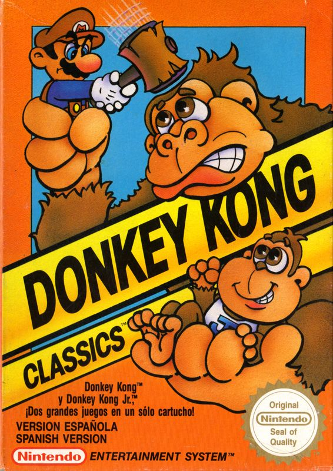
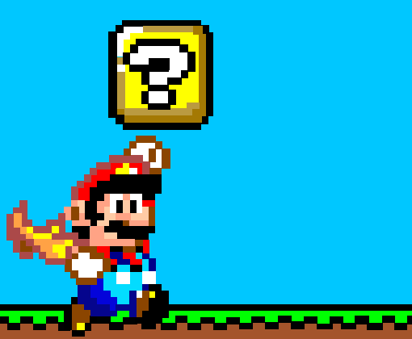
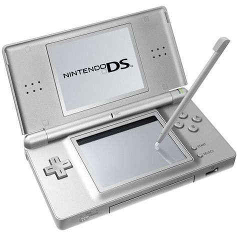
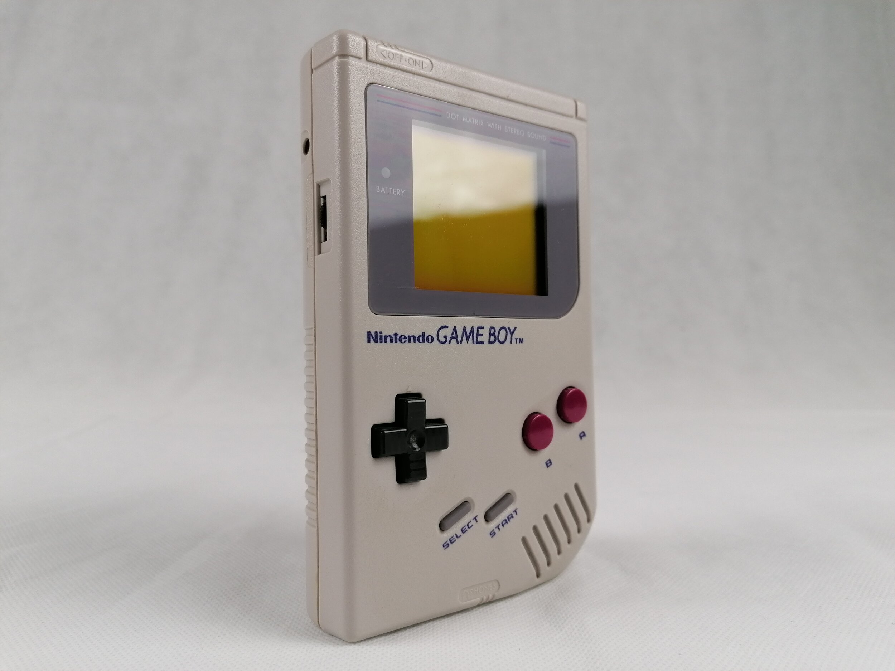
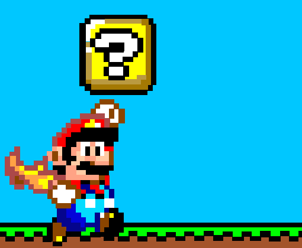
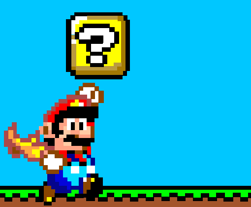

A Nintendo é uma das empresas mais icônicas da indústria de videogames, fundada em 1889 no Japão como uma fabricante de cartas de baralho.
A transição para videogames começou na década de 1970, com o lançamento de "Donkey Kong", que apresentou Mario, um dos personagens mais reconhecidos do mundo.


O primeiro console de sucesso da empresa foi o Nintendo Entertainment System (NES), lançado em 1983, que revitalizou o mercado de games após a crise de 1983.
Seguiram-se sucessos como o Super Nintendo (SNES), que trouxe gráficos coloridos e jogos memoráveis.
Na década de 2000, a Nintendo lançou o Wii, que revolucionou o conceito de jogabilidade com controles de movimento, atraindo um público amplo e diversificado.
O Nintendo Switch, lançado em 2017, consolidou a inovação ao combinar a portabilidade com a experiência de um console de mesa, recebendo aclamação mundial.
TOP 3 MAIS VENDIDOS

Nintendo DS (2004)
Aproximadamente 154 milhões de unidades.

Game Boy (1989)
Cerca de 118 milhões de unidades
Nintendo Switch (2017)
Mais de 130 milhões de unidades (e ainda em venda).

 
